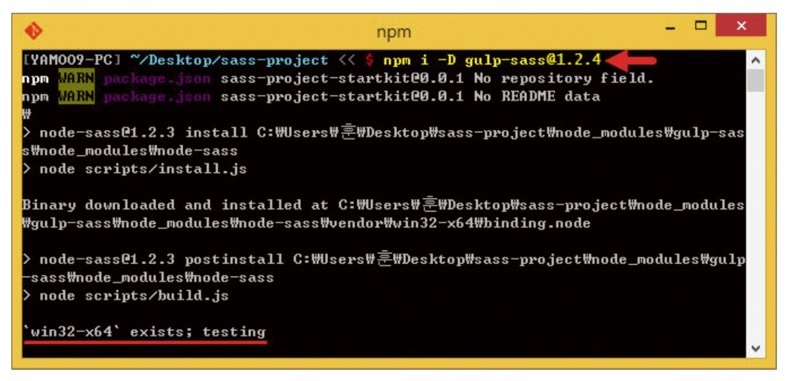

gulp-sass 모듈 설치하기
- gulp-sass 모듈 설치하기
-
npm i -D node-sass gulp-sass 명령어를 사용하여 프로젝트 디렉터리에 모듈을 설치합니다.
원하는 버전으로 NPM 모듈을 설치하려면, '모듈 이름@버전' 형태로 코드를 입력하여 실행합니다.
ex> npm i -D gulp-sass@1.2.3
정상적으로 프로젝트 디렉터리에 설치된다면 다행이지만, 필자의 집필 환경인 Window 8.1 64비트 운영체제 환경에서는 다소 문제가 발생했습니다.
다음 사진에서 빨강색 밑줄로 표시한 부분을 보면, 'win32-x64' exists 오류 메시지가 표시되면서 이후 설치 과정이 진행되지 않습니다.
이때는 ctrl+c를 눌러 설치를 취소합니다.
사용자 환경에 따라 오류 없이 설치되기도 합니다. 오류 없이 설치된다면 이어지는 해결 과정은 생략해도 됩니다.

문제를 다룬 이슈 리포트(https://github.com/dlmanning/gulp-sass/issues/115)를 보면,
gulp-sass가 개발 의존하는 node-sass에서 발생한 문제입니다.
하지만 gulp-sass 모듈 개발자인 dlmanning은 node-sass의 문제이기에 자신이 처리할 수 없다며 다소 무책임한 태도를 보입니다.
결국 사용자가 직접 문제를 해결해야 합니다.
- 'win32-x64' exists 설치 오류로 발생한 문제는 없나요?
-
오류가 발생한 상태에서 설치를 취소해도 gulp-sass 실행에는 문제가 없습니다.
하지만 문제가 발생한다면 .travis.yml(https://github.com/sass/node-sass/blob/master/.travis.yml)
에서 코드를 복사한 후 프로젝트 디렉터리 안에 있는 [node_modules/gulp-sass] 디렉터리에서 .travis.yml 파일을 열고 붙여 넣어 저장합니다.